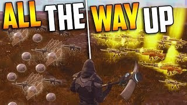

Fortnite, as with all multiplayer games, is vulnerable to other players ruining the gaming experience for you and others. Here are some guidelines on how to deal with others and stop yourself from going down this route.
Your hero has a maximum weapon power level. If you're still in Stonewood and trading for a bunch of ☇ 130 weapons, you won't be able to use them.
The main takeaway for game etiquette is to always contribute to the objective. If you don't help at all, you could get reported!
Another thing to consider is the hero that you are using. A Jess hero, for example, is generally used more for farming than combat or building. Therefore, it is not a good idea to use Jess if you are trying to complete an objective.
Don't be this guy (image by DAN7EH)